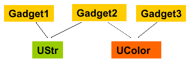

|
|
the ubit toolkit eric lecolinet enst | 9 |

UStr str; UColor col; utextbox( uedit() + str ); ubutton( col + str ) udialog( col + uhbox( ...) )
ubutton( col + str
+ UOn::select / uset(&col, UColor::red)
+ UOn::unselect / uset(&col, ucolor("#aabbcc"))
);